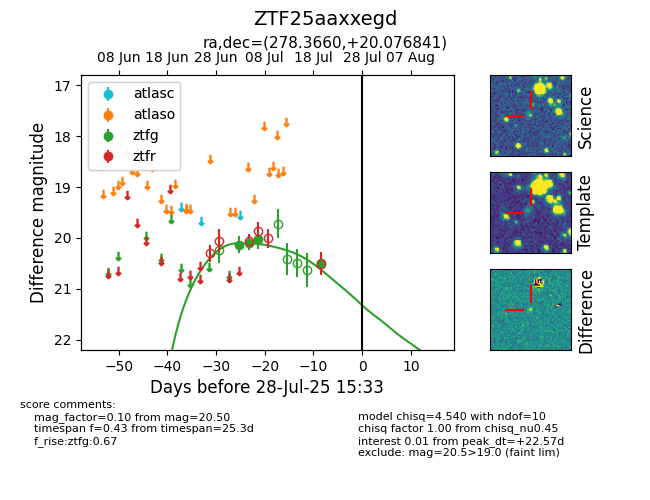

Target ZTF25aaxxegd at 2025-07-28 15:33, see:
FINK: fink-portal.org/ZTF25aaxxegd
Lasair: lasair-ztf.lsst.ac.uk/objects/ZTF25aaxxegd
ALeRCE: alerce.online/object/ZTF25aaxxegd
alt names
ZTF25aaxxegd (ztf,fink)
coordinates:
equatorial (ra, dec) = (278.3660,+20.07684)
galactic (l, b) = (49.1279,+12.82772)
photometry
last ztfg=20.50
4 ztfg detections
